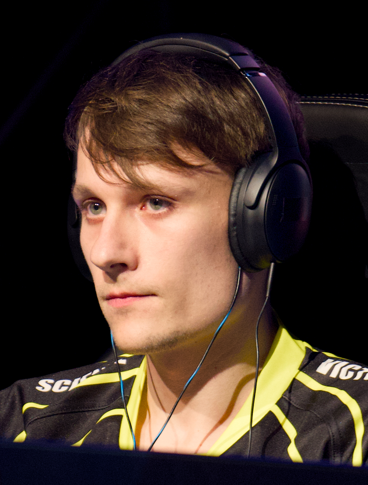

Biografía
Serral, cuyo nombre real es Joona Sotala, es un jugador profesional finlandés de StarCraft II, considerado uno de los mejores jugadores de Zerg en la historia del juego.
Logros destacados
- Campeón mundial en 2018
- Múltiples títulos de DreamHack y ESL
- Dominio absoluto en Europa